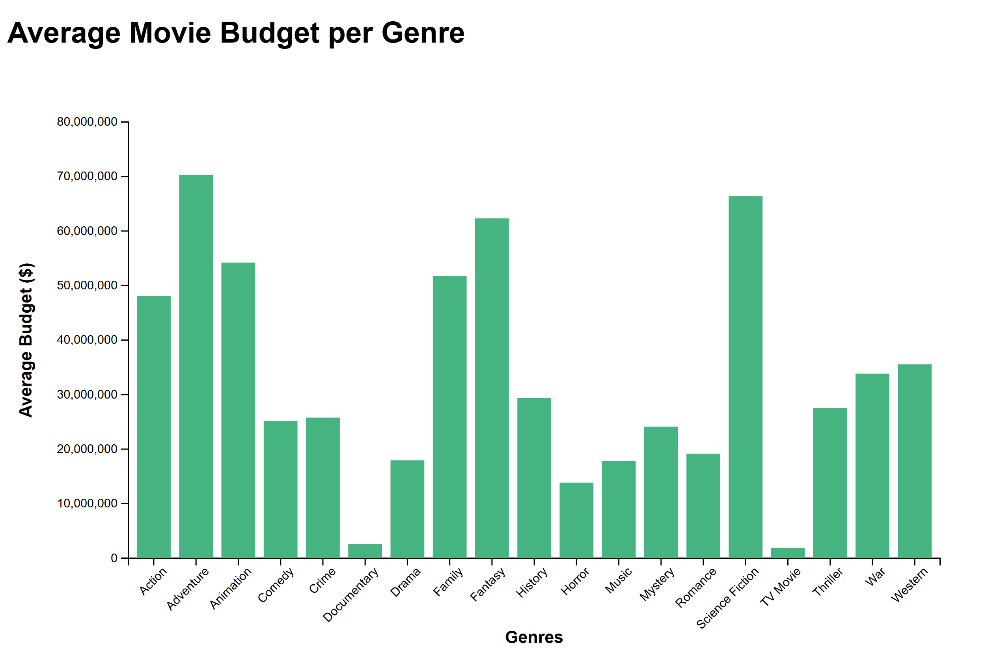

From the three Sankey diagrams, it's clear that the drama genre has consistently held strong over the decades, from the 2000s to the 2020s—frequently generating around $10 to $50 million in revenue, highlighting its enduring appeal across generations. Action, adventure, and animation consistently dominate the revenue charts, with action notably exhibiting a wide range of both budget and revenue, which aligns with its high-risk, high-reward nature. Adventure and action also stand out as some of the most expensive genres to produce, which makes sense given their reliance on stunts, special effects, and often large-scale productions. Interestingly, animation has seen significant growth since the 2000s, likely boosted by advances in technology that have made the genre more appealing and accessible to a global audience. The emergence of science fiction as a top 10 genre in the 2020s, matching its budget with equivalent revenue, signals a shift in viewer interest toward futuristic and tech-driven narratives, possibly taking the place of fantasy, which noticeably disappeared after the 2000s. This transition may reflect changing cultural fascinations, where sci-fi now serves as the modern vehicle for imaginative storytelling once held by fantasy. Documentaries made their way into the top 10 during the 2010s, perhaps driven by the streaming boom and rising interest in real-world stories. The noticeable absence of romance in the 2020s category may be because it has been absorbed into hybrid genres or has lost some mainstream appeal. Meanwhile, horror has grown increasingly well-funded and popular, likely due to advancements in editing and production technology that make it far more immersive and engaging than in the past. Collectively, these shifts reveal how technological evolution and changing audience preferences continue to reshape the cinematic landscape.

The above graph displays a bar plot, made with D3, representing the average budget put into producing movies across various genres within the iMDb movie dataset. The x-axis consists of the genres while the y-axis consists of the average budget range in dollars ranging from $10 million to $80 million. From this graph, we can conclude that "Adventure", "Science Fiction", "Fantasy", and "Animation" are the most expensive movies to produce, while "Horror", "Documentary", and "TV Movie" genres are less expensive to produce. Realistically, the most expensive categories are reasonable since a lot of time and effort is dedicated to special effects and visualizarions in movies about things that can't be replicated in real life-- like space, animation, and similar ideas. Meanwhile, documentaries are made with existing film and footage with most of the budget likely dedicated toward only editing. Still, $10 million to $80 million in budget is not a small scale in the film industry.
This treemap visualizes the top twenty-five production companies based on total movie revenue, with the size of each box representing total movie earnings and the color representing the average user rating of the companies' productions. Major, well-known production companies like Warner Bros. Pictures, Universal Pictures, and Walt Disney Pictures dominate the biggest space on the treemap, which reflects their mass popularity in the movie industry and their corresponding substantial financial influence. Although still well-known companies, Illumination and DreamWorks Animation take up a bit less space, which could be explained by their more niche movie productions (animation films, family films, etc.) However, the color gradient reveals that high revenue does not always equate to higher audience ratings--some of the larger production companies have lighter shades compared to smaller ones, like Pixar, Marvel Studios, and Heyday Films, all with over a 7.0 user ratings. This suggests that these production companies focus on quality over box office returns and appeal to a much more receptive audience. This balance between box office success and audience satisfaction offers interesting insights into movie industry dynamics, which highlights companies that continue to produce not only popular but also acclaimed films.
This interactive scatterplot visualizes the relationship between movie popularity and average user rating and explores how different genres perform in the terms of public perception and reach.
The x-axis represents popularity as a quantitative field, and the y-axis represents average user rating to show clusters & trends. Color encoding highlights selected genre via a dropdown menu. The rest of the data is greyed out so it is easy to focus on the genre of interest. The scatterplot reveals interesting conclusions, such that popular genres include action, adventure, and comedy, as they dominate in terms of popularity, range, and density but also scatter in rating, indicating a wide range of reception by the audience. Additionally, genres like family, war, and animation show generally lower popularity, but higher ratings, which suggests a niche appeal or movie success without drawing large amounts of viewers. We are able to also notice the genres that have average or lower ratings, such as horror and mystery, suggesting that the movies produced in this genre are either sub-par to viewers or interesting enough to garner higher ratings.
Given the changing economic climate of the past two decades, the budgets allotted to produce movies has substantially increased over the years. How does this increase in movie production budget impact the movie's overall popularity and revenue once it is released? Moreover, what movie genres typically have the biggest budgets and does that help them generate more revenue or popularity?
The graphs above demonstrate the relationship between movie budget and multiple factors: revenue, popularity, and vote_average. As you can see from the slider bar, movie budgets drastically increase from the years 2000-2024. However, this increase has no overall impact on the amount of revenue produced. Except for a few special cases in which the revenue is very high, revenue stays within the same range even though the budget increases. On the other hand, as budget increases, movie popularity slightly increases. However, even though more people are going to see these movies with higher budgets, their reviews become more polarized. In other words, higher budget movies evoke a wider variety of feelings and opinions than movies with smaller budgets. Overall, these graphs function to demonstrate that higher budgets do not always correlate to 'better' movies. A bigger movie budget is not an indicator for better revenue or better audience reviews, but may attract a larger audience.